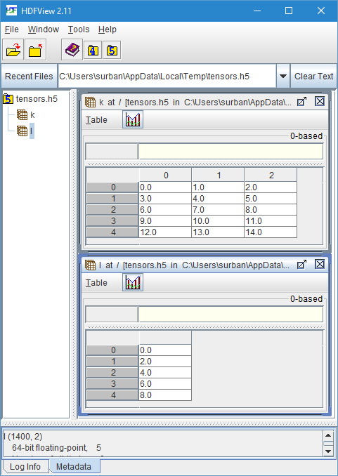

Working with Tensors
In Deep.Net a tensor is an n-dimensional array of an arbitrary data type (for example single, double or System.Numerics.Complex).
Tensors are implemented by the ArrayNDT<'T> class and its derivatives ArrayNDHostT (for tensors stored in host memory) and ArrayNDCudaT (for tensors stored in CUDA GPU memory).
The Deep.Net tensor provides functionality similar to Numpy's Ndarray and MATLAB arrays, including vector-wise operations, reshaping, slicing, broadcasting, masked assignment, reduction operations and BLAS operations.
The API for host and GPU stored tensors is equal, thus a program can make use of GPU accelerated operations without much porting effort.
You can run this example by executing FsiAnyCPU.exe docs\content\tensor.fsx after cloning the Deep.Net repository.
You can move your mouse over any symbol in the code samples to see the full signature.
Architecture
To work with the tensor library, open the ArrayNDNS namespace.
1:
|
|
The tensor library consists of three primary modules: ArrayND, ArrayNDHost, ArrayNDCuda.
ArrayND contains functions to work with existing tensors (regardless of their storage location) such as reshape, sum, and copy.
ArrayNDHost contains functions to create new tensors in host memory, for example zeros, ones and ofList.
ArrayNDCuda contains functions to create new tensors in CUDA GPU memory and to facilitate the transfer of tensors between host and GPU memory, for example zeros, toDev and fromDev.
A tensor stored in host memory is of type ArrayNDHostT<'T> where 'T is the contained data type.
Correspondingly a tensor stored in CUDA GPU memory is of type ArrayNDCudaT<'T>.
Both types are derived from ArrayNDT<'T>.
Creating tensors
Let us create a simple \(7 \times 5\) matrix, i.e. two-dimensional tensor, in host memory.
1:
|
|
The first argument to the ArrayNDHost.initIndexed function is an F# list specifies the shape of the tensor.
The second argument is a function that takes the n-dimensional index (zero-based) of an entry and computes its initial value; here we use the formula \(5i + j\) where \(i\) is the row and \(j\) is the column of the matrix.
The data type (here float) is automatically inferred from the return type of the initialization function.
By default row-major storage (C storage order) is used.
The resulting tensor has the following entries.
1: 2: 3: 4: 5: 6: 7: |
|
We can also create a tensor filled with zeros using the ArrayNDHost.zeros function.
1:
|
|
In this case we must specify the data type (int) explicitly, since there is no information in the function call to infer it automatically.
We can use the ArrayNDHost.ones function to obtain a tensor filled with ones.
1:
|
|
The ArrayNDHost.identity function creates an identity matrix of the given size.
1:
|
|
This created a \(6 \times 6\) identity matrix.
A tensor of rank zero can be created with the ArrayNDHost.scalar function.
1:
|
|
The numeric value of a zero-rank tensor can be extracted using the ArrayND.value function.
1:
|
|
Creation from F# sequences, lists and arrays
The ArrayNDHost.ofSeq converts a F# sequence of finite length into a one-dimensional tensor.
For example, the code
1:
|
|
creates a vector of all multiplies of 3 in the range between 0 and 20:
1:
|
|
A list can be converted into a one-dimensional tensor using the ArrayNDHost.ofList function.
To convert an array into a tensor use the ArrayNDHost.ofArray function.
The ArrayNDHost.ofArray2D and ArrayNDHost.ofArray3D take two-dimensional and three-dimensional arrays and convert them into tensors of respective shapes.
Conversion to F# lists and arrays
Use the ArrayNDHost.toList function to convert a tensor into a list.
A multi-dimensional tensor is flattened before the conversion.
Use the ArrayNDHost.toArray, ArrayNDHost.toArray2D and ArrayNDHost.toArray3D to convert a tensor into an array of respective dimensionality.
Printing tensors
Tensors can be printed using the %A format specifier of the standard printf function.
1: 2: 3: 4: |
|
The output of large tensors is automatically truncated to a reasonable size.
Accessing elements
Individual elements of a tensor can be accessed using the tensor.[[idx0; idx1; ...; idxN]] notation.
Zero-based indexing is used.
For example
1:
|
|
accesses the element at index \(1,1\) and returns 5.0.
Note that the indices are specified with double brackets ([[ and ]]) and separated using a semicolon.
Tensors are mutable objects.
An element can be changed using the tensor.[[idx0; idx1; ...; idxN]] <- newValue notation.
For example
1:
|
|
changes the tensor to
1: 2: 3: 4: 5: 6: 7: |
|
Slicing
Slicing creates a new view into an existing tensor.
Slicing is done using the tensor.[rng0, rng1, ..., rngN] notation.
Note that the ranges are specified within single brackets and separated using commas.
Let us select the first row of tensor a.
1:
|
|
The asterisk selects all elements of the specified dimension. The result is a tensor of rank one (i.e. a vector) with the entries
1:
|
|
Since a1 is a view of a it shares the same memory.
Changing an element of a1 by assigning a new value to it
1:
|
|
changes the tensor a as well.
This can be seen by outputting a1 and a.
1: 2: |
|
The corresponding output is
1: 2: 3: 4: 5: 6: 7: 8: 9: 10: |
|
The slicing notation can also be used for changing multiple elements of a tensor at once. For example
1: 2: |
|
sets all elements of the first row of a to 1.
The tensor a is now
1: 2: 3: 4: 5: 6: 7: |
|
Slicing operations
Consider the two-dimensional tensor a of shape \(7 \times 5\) and the four-dimensional tensor b of shape \(1 \times 2 \times 3 \times 4\).
A slice range can be one of the following.
- A range, e.g.
1..3. Selects the specified elements in the corresponding dimension. For examplea.[1..3, 0..2]is the \(3 \times 3\) sub-tensor ofacontaining rows 1, 2, 3 and columns 0, 1, 2. The ending index is inclusive. - A partial range, e.g.
1..or..3. This selects all elements in the corresponding dimension to the end or from the beginning respectively. Thusa.[1.., ..3]is equivalent toa.[1..6, 0..3]. - An asterisk
*. Selects all elements in the corresponding dimension. For examplea.[1..3, *]is equivalent toa.[1..3, 0..4]. - An integer. The corresponding dimension collapses, e.g.
a.[*, 0]specifies a one-dimensional tensor of shape \(7\) corresponding to the first column ofa. - The special identifier
NewAxis. It inserts a new axis of size one at the given position. For examplea.[*, NewAxis, *]produces a view of shape \(7 \times 1 \times 5\). - The special identifier
Fill. It fills any dimensions not specified (if any) with an asterisk*. For exampleb.[0, Fill, 2]is equivalent tob.[0, *, *, 4]and results into a two-dimensional view into tensorb.
All slice range operators can be combined arbitrarily.
The reader should note that the result of selecting a single element using the slicing operator, e.g. a.[1,1], is a tensor of dimension zero sharing the same memory as a.
Shape operations
Getting the shape
The shape of a tensor can be accessed using the function ArrayND.shape or using the Shape property.
Both methods return a list.
The rank (number of dimensions) can be accessed using the function ArrayND.nDims or with the NDims property.
The number of elements can be accessed using the function ArrayND.nElems or with the NElems property.
For example
1:
|
|
prints
1:
|
|
Reshaping
Reshaping changes the shape of the tensor while keeping the number of elements constant.
For example consider the \(4 \times 4\) matrix b,
1:
|
|
with value
1: 2: 3: 4: |
|
We can use the ArrayND.reshape function to transform this matrix into a vector of length 16.
1:
|
|
Now b1 has the value
1:
|
|
We can also specify -1 for the new size of at most one dimension. In this case its size will be chosen automatically (so that the number of elements does not change). For example
1:
|
|
reshapes b into a three dimensional tensor of shape \(4 \times 2 \times 2\) with the value
1: 2: 3: 4: 5: 6: 7: 8: |
|
View or copy?
If the tensor to reshape has row-major order (C order), then ArrayND.reshape creates a new view into the existing tensor.
Otherwise the tensor is copied during the reshape operation.
If you need to ensure that no copy is performed, i.e. the original and reshaped tensor share the same memory, use the ArrayND.reshapeView function instead.
It will raise an error if the original tensor is not in row-major order.
Reordering axes and transposing
The ArrayND.swapDim function creates a new view of a tensor with the given dimensions swapped.
For example
1:
|
|
transpose the matrix b into
1: 2: 3: 4: |
|
The original and tensor with swapped axes share the same memory and modifications made to one of them will affect the other one.
A matrix can also be transposed using the ArrayND.transpose function or the .T method, i.e. ArrayND.transpose b and b.T both transpose the matrix b.
The ArrayND.reorderAxes function can reorder axes arbitrarily.
It takes a list (of length equal to the rank of the tensor) with each element specifying the new position of the corresponding axis.
The list must be a permutation of the axes indices, i.e. duplicating or leaving out axes is not permitted.
Consider the rank three tensor b2 from above; then
1:
|
|
creates the view b4 with shape \(2 \times 2 \times 4\).
It is important to understand that each list entry specifies where the axis moves to, not where it is coming from.
Thus, in this example, axis 0 becomes axis 2, axis 1 becomes axis 0 and axis 2 becomes axis 1.
Adding axes
The ArrayND.padLeft and ArrayND.padRight functions add a new axis of size one on the left or right respectively.
If you need to add an axis at another position, use the slicing operator with the NewAxis identifier.
For example
1:
|
|
creates a view of shape \(2 \times 2 \times 1 \times 4\).
Broadcasting
An axis of size one can be repeated multiple times with the same value. This is called broadcasting. Consider the \(1 \times 4\) matrix
1:
|
|
with value
1:
|
|
We can use the ArrayND.broadcastToShape function,
1:
|
|
to obtain the tensor
1: 2: 3: |
|
Broadcasting creates a view of the original tensor, thus the repeated dimensions do not use additional memory and changing the broadcasted view will also change the original as well as all indices of a broadcasted dimension. Thus, in this example, executing
1: 2: 3: |
|
prints
1: 2: 3: 4: 5: 6: |
|
Broadcasting is also performed automatically when performing element-wise operations between two tensors of different, but compatible, shapes. This will be explained in the section about element-wise tensor operations.
Tensor operations
The tensor type supports most standard arithmetic operators and arithmetic functions.
Element-wise binary arithmetic operators
The elementary operators (+, -, *, /, %, **) are executed element-wise.
For example, consider the vectors a and b,
1: 2: |
|
with values
1: 2: |
|
Then vector f,
1:
|
|
has the value
1:
|
|
It is also possible to apply an operator to a tensor and a scalar of the same data type. In this case the scalar is broadcasted (repeated) to the size of the given tensor. For example
1:
|
|
results in
1:
|
|
Automatic broadcasting
If a binary operator (for example +) is applied to two tensors of different shapes, the library tries to automatically broadcast both tensors to a compatible shape using the following rules.
-
If the tensors have different ranks, the tensor with the lower rank is padded from the left with axes of size one until both tensors have the same rank.
For example, if
ais of shape \(4 \times 3 \times 1\) andbis of shape \(2\), thenbis padded to the shape \(\mathbf{1} \times \mathbf{1} \times 2\). -
For each dimension that has different size in both tensors and size one in one of the tensors, this dimension of the tensor with size one is broadcasted to the corresponding dimension of the other tensor.
Thus, in our example, the last dimension of
ais broadcasted resulting in the shape \(4 \times 3 \times \mathbf{2}\) and the first and second dimensions ofbare broadcasted resulting in the shape \(\mathbf{4} \times \mathbf{3} \times 2\).
If the shapes still differ after applying the above rules, the operation fails.
Element-wise arithmetic functions
The standard F# arithmetic functions, such as sin, cos, exp, log, can also be applied to tensors.
For example
1:
|
|
calculates the sine of f element-wise.
Element-wise function application
It is also possible to apply an arbitrary function element-wise using the ArrayND.map function.
For example
1:
|
|
produces the tensor
1:
|
|
An in-place variant that overwrites the original tensor is the ArrayND.mapInplace function.
The ArrayND.map2 function takes two tensors and applies a binary function on their elements.
Arithmetic reduction functions
The ArrayND.sum function computes the sum of all elements of a tensor and returns a zero-rank tensor.
Thus, in our example
1:
|
|
prints
1:
|
|
The ArrayND.sumAxis function computes the sum over the given axis.
Thus
1: 2: |
|
computes the sums of all columns of the matrix
1: 2: 3: 4: |
|
resulting in the vector
1:
|
|
Likewise the ArrayND.product and ArrayND.productAxis compute the product of a tensor.
Maximum and minimum
The ArrayND.min and ArrayND.max compute the minimum and maximum of a tensor and return a zero-rank tensor.
Analogously ArrayND.minAxis and ArrayND.maxAxis compute the minimum and maximum over the given axis.
Matrix multiplication
Matrix multiplication (dot product) is implemented using the .* operator.
This operator can be used to calculate a vector/vector product resulting in a scalar, a matrix/vector product resulting in a vector and a matrix/matrix product resulting in a matrix.
For example
1: 2: 3: |
|
computes the matrix product of the \(5 \times 3\) matrix h with the \(3 \times 3\) matrix i resulting in the 5 \times 3 matrix hi.
Tensor product
The tensor product between two tensors can be obtained using the %* operator or the ArrayND.tensorProduct function.
Element-wise comparison operators
Element-wise comparisons are performed using the ==== (element-wise equal), <<<< (element-wise smaller than), >>>> (element-wise larger than) and <<>> (element-wise not equal) operators.
They return a tensor of equal shape and boolean data type.
For example
1:
|
|
has the value
1:
|
|
Logic reduction operations
To check whether all elements satisfy a condition, use the ArrayND.all function after applying the element-wise comparison operator.
To check whether at least one element satisfies a condition, use the ArrayND.any function after applying the element-wise comparison operator.
Thus
1:
|
|
has the value false, but
1:
|
|
returns true.
Element-wise logic operators
Element-wise logic operations are performed using the ~~~~ (element-wise negation), &&&& (element-wise and) and |||| (element-wise or) operators.
Thus
1:
|
|
has value
1:
|
|
Disk storage in HDF5 format
Tensors can be stored in industry-standard HDF5 files. Multiple tensors can be stored in a single HDF5 file and accessed by assigning names to them.
Writing tensors to disk
The following code creates two tensors k and l and writes them into the HDF5 file tensors.h5 in the current directory.
1: 2: 3: 4: 5: 6: 7: |
|
The resulting file can be viewed using any HDF5 viewer, for example using the free, cross-platform HDFView application as shown below.

Loading tensors from disk
The following code loads the tensors k and l from the previously created HDF5 file tensors.h5 and stores them in the variables k2 and l2.
1: 2: 3: 4: |
|
The data types of k2 and l2 must be declared explicitly, since they must be known at compile-time.
If the declared data type does not match the data type encountered in the HDF5, an error will be raised.
Reading .npy and .npz files produced by Numpy
For compatibility, it is possible to read .npy and .npz files produced by Numpy.
Not all features of the format are supported.
Writing .npy and .npz files is not possible; use the HDF5 format instead.
Use the NPYFile.load function to read an .npy file and return its contents as an ArrayNDHostT.
Use the NPZFile.Open function to open an .npz file and the Get method of the resulting object to obtain individual entries as ArrayNDHostT.
CUDA GPU support
If your workstation is equipped with a CUDA capable GPU, you can transfer tensors to GPU memory and perform operations on the GPU.
GPU tensors are instances of the generic type ArrayNDCudaT<'T> where 'T is the contained data type.
Note: While tensors can be created on or transferred to the GPU, currently there is no supported for accelerated operations on the GPU when using tensor directly. Thus executing tensor operations (except slicing and view operations) on the GPU will be very slow at the moment and should be avoided. This is supposed to change with future versions and does not affect compiled functions created by the Deep.Net library.
Data transfer
Tensors can be transferred to the GPU by using the ArrayNDCuda.toDev function.
Transfer back to host memory is done using the ArrayNDCuda.toHost function.
1: 2: |
|
mGpu is now a copy of m in GPU memory.
Tensor creation
It is possible to create tensors directly in GPU memory.
The function ArrayNDCuda.zeros, ArrayNDCuda.ones, ArrayNDCuda.identity and ArrayNDCuda.scalar behave like their ArrayNDHost counterparts, except that the result is stored on the GPU.
1:
|
|
Here we created a \(4 \times 4\) identity matrix of data type float on the GPU.
Operators and functions
All functions and operators described in previous section can be equally applied to GPU tensors. For example, the code
1:
|
|
takes three elements from the GPU tensor and multiplies them by 3 on the GPU.
Conclusion
We presented an introduction to working with host and GPU tensors in Deep.Net. Direct tensor manipulation will be used mostly for dataset and results handling. The machine learning model will instead be defined as a symbolic computation graph, that supports automatic differentiation and compilation to optimized CUDA code.
Full name: Tensor.a
val float : value:'T -> float (requires member op_Explicit)
Full name: Microsoft.FSharp.Core.Operators.float
--------------------
type float = System.Double
Full name: Microsoft.FSharp.Core.float
--------------------
type float<'Measure> = float
Full name: Microsoft.FSharp.Core.float<_>
Full name: Tensor.z1
val int : value:'T -> int (requires member op_Explicit)
Full name: Microsoft.FSharp.Core.Operators.int
--------------------
type int = int32
Full name: Microsoft.FSharp.Core.int
--------------------
type int<'Measure> = int
Full name: Microsoft.FSharp.Core.int<_>
Full name: Tensor.o1
val single : value:'T -> single (requires member op_Explicit)
Full name: Microsoft.FSharp.Core.ExtraTopLevelOperators.single
--------------------
type single = System.Single
Full name: Microsoft.FSharp.Core.single
Full name: Tensor.id1
Full name: Tensor.s1
Full name: Microsoft.FSharp.Core.ExtraTopLevelOperators.printfn
Full name: Tensor.seq1
val seq : sequence:seq<'T> -> seq<'T>
Full name: Microsoft.FSharp.Core.Operators.seq
--------------------
type seq<'T> = System.Collections.Generic.IEnumerable<'T>
Full name: Microsoft.FSharp.Collections.seq<_>
Full name: Tensor.a1
Full name: Tensor.a2
Full name: Tensor.b
Full name: Tensor.b1
Full name: Tensor.b2
Full name: Tensor.b3
Full name: Tensor.b4
Full name: Tensor.b5
Full name: Tensor.c
Full name: Tensor.c1
Full name: Tensor.d
Full name: Tensor.e
Full name: Tensor.f
Full name: Tensor.d1
Full name: Tensor.f2
Full name: Microsoft.FSharp.Core.Operators.sin
Full name: Tensor.g
Full name: Tensor.h
Full name: Tensor.i
Full name: Tensor.hi
Full name: Tensor.k
Full name: Tensor.l
Full name: Tensor.hdfFile
Full name: Tensor.hdfFile2
Full name: Tensor.k2
Full name: Tensor.l2
static member AppendAllLines : path:string * contents:IEnumerable<string> -> unit + 1 overload
static member AppendAllText : path:string * contents:string -> unit + 1 overload
static member AppendText : path:string -> StreamWriter
static member Copy : sourceFileName:string * destFileName:string -> unit + 1 overload
static member Create : path:string -> FileStream + 3 overloads
static member CreateText : path:string -> StreamWriter
static member Decrypt : path:string -> unit
static member Delete : path:string -> unit
static member Encrypt : path:string -> unit
static member Exists : path:string -> bool
...
Full name: System.IO.File
Full name: Tensor.m
Full name: Tensor.mGpu
Full name: Tensor.n
Full name: Tensor.mGpuSq